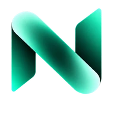

Mensajes
Texto, archivos, contenido multimedia y notas de voz privadas con cifrado de extremo a extremo como principio de diseño.

PRIVADO DESDE EL DISEÑO
NEXUS reúne mensajería privada, push-to-talk, llamadas de voz y vídeo en una sola plataforma de comunicaciones seguras, diseñada alrededor del cifrado de extremo a extremo, la minimización de metadatos y una identidad controlada por el dispositivo.
Software en fase alfa. Los componentes críticos de seguridad continúan en desarrollo, validación y revisión.

Sesión cifrada establecida.
Canal PTT preparado.
Vista previa de la interfaz. El transporte en tiempo real no está habilitado en esta web pública.
PRODUCTO
Diseñada para personas y equipos que necesitan comunicaciones privadas, rápidas y sencillas sin convertir la seguridad en un problema de usabilidad.
Texto, archivos, contenido multimedia y notas de voz privadas con cifrado de extremo a extremo como principio de diseño.
Comunicación instantánea al mantener pulsado, con modo de almacenamiento y reenvío cuando la conectividad es inestable.
Arquitectura de llamadas orientada al uso de relays para reducir la exposición directa de la IP pública entre participantes.
Videocomunicaciones privadas integradas en el mismo modelo de identidad segura y verificación entre contactos.
SEGURIDAD
NEXUS se está construyendo alrededor de propiedades verificables: claves controladas por el dispositivo, contenido cifrado, conocimiento mínimo por parte de los servidores y criptografía basada en estándares.
NEXUS PARA ANDROID
La versión Alpha ya se compila de forma automática desde el repositorio privado de la aplicación. Durante esta fase, el acceso permanece controlado mientras terminamos la firma de producción y la capa de seguridad del cliente.
Primera compilación de prueba con identidad visual NEXUS integrada.
98977ead30cc68cfa8253c43c1f367d79d024c2ac9065dcd098703bd8dd1920a
PARA ORGANIZACIONES
NEXUS está siendo diseñado para admitir infraestructura relay dedicada, despliegues controlados y salas privadas de comunicación sin conceder a los operadores de infraestructura acceso al contenido de los mensajes.
DOCUMENTACIÓN
NEXUS
NEXUS es un proyecto de comunicaciones seguras centrado en privacidad, control y usabilidad práctica. El producto se encuentra actualmente en fase alfa de desarrollo.